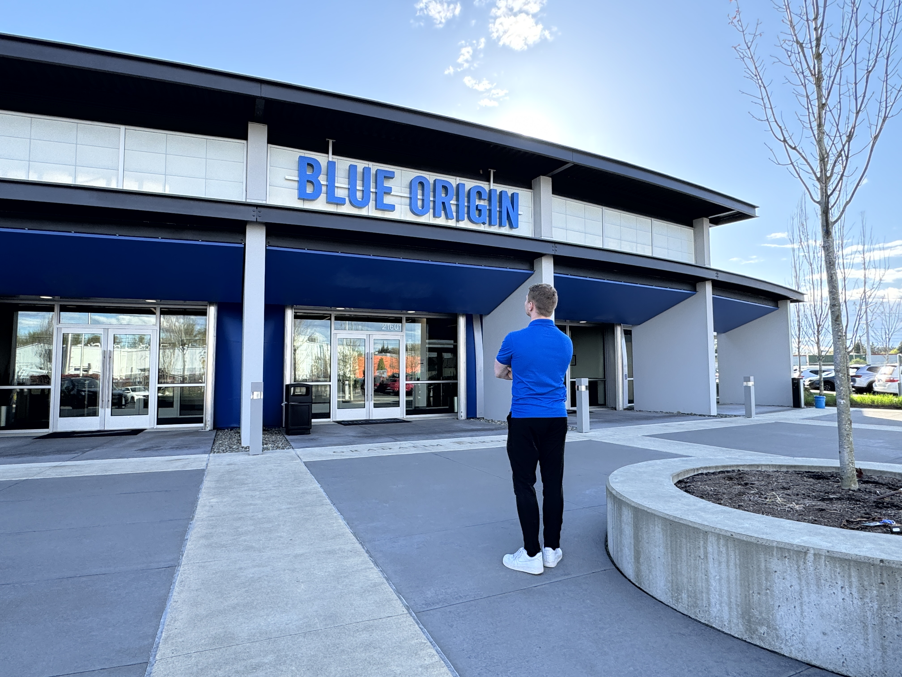

In this article, I'm giving a brief overview of both what you should be looking for in a company as a young engineer and what to say in cover letters and interviews - things which I actually think go hand in hand. Most of what I'm going to focus on is what to say more broadly in engineering and tech interviews; in a separate article, I'm also going to give some specific examples of technical concepts to brush up on for aspiring GNC Engineers as well since that's the field of the space industry I'm going into and know a lot about (even if it's a bit niche).
These are almost all pieces of advice that I've collected from other people (top engineers I highly respect, astronauts, etc.) during my time as a University of Southern California Masters and PhD Student, so I'm moreso aggregating the best advice I've heard from other people here rather than my own completely original ideas. However, I've seen almost all of this stand the test of time, and it's helped me immensely in my career, so in an effort to help other young engineers or professionals navigate their careers, I'm going to include it all here.

Some of the tips in this article helped me get my Blue Origin internship!
Have a Strong "Why" and Aim To Push The State of The Art
One of the first things - while it might seem sort of cliche - is that you should gravitate towards companies 1) with a strong vision that's very well articulated, and 2) a push to do things better than they've done before.
If the company can articulate an attractive, clear, coherent vision - one that you can put on a bumper sticker - then it'll push everyone who works there through all of the stress.
Elon's Companies (SpaceX, Tesla, Boring Company, etc.) are a prime example of this - most of them have a very strong and inspiring vision and the push to do things better is "in their DNA."
Something that I've learned - and that has highly resonated with me throughout my own career - is that:
"It's hard to pour your life into something unless you know the reason for it."
This applies both on the macro level (your company's vision) and the micro level (your own career momentum) – more on this in the side note below.
A great historical example of the former is when JFK visited a NASA Center in the 1960s.
When he met one of the workers, Kennedy asked what his job was.
Famously, the guy's response was "I'm helping put a man on the moon."
Notice he didn't say "welder" or "electronics engineer" or so on and so forth.
He connected his job to a much higher purpose, which in the opinion of veteran engineers I talked to, makes working hard not actually seem that bad.
On the other hand, when you don't have a strong purpose like that, it can lead to a much more mundane experience and lead to other things such as burn out and so on.
Quick Side Note: The Two Types of "Why's."
To avoid confusion, I'm going to briefly clarify the two related but distinct types of "why's" which you can have in your career.
Regarding the quote that "it's hard to pour your life into something unless you know [and have a good] reason for it" – I believe that this operates on multiple levels, multiple types of why's, as it pertains to careers.
The first type of "why" that I believe this applies to is in the broader mission of the company or organization.
For NASA in the 60s, this was putting a human on the moon.
For SpaceX, this is making life multiplanetary.
For Tesla, it's about saving the planet we're on.
All of these companies had inspiring missions that weren't just about the quarterly results or short-term shareholder value.
This is the "macro" why.
Second, I think there's more of a micro-level "why" too.
For example, for me recently, I was in a tumultuous and unstable PhD lab which caused me to switch PhD topics 3 times in the first 3 years of my program.
I'll expand on this example in the high-growth section, but I recently pivoted from my PhD - which was in an unmarketable topic which paid little and had no job market - to a career in GNC and it's been much more motivating.
If you can get BOTH "why's" lined up – i.e. if you're working on something bigger than yourself (the macro-why), and you're confident and secure in your personal skillset and leverage (the micro-why) – then you've got a great foundation for your career.
But if either one isn't lined up, keep iterating.
Go After The Hardest Problems, Aim To Solve Them Efficiently
Something that you should both say in interviews and actually genuinely desire is to have the chance "to solve the hardest problems [in x field/industry], and have the opportunity to solve those problems efficiently."
While I'm telling you that this is a major talking point which companies like, I'm not just saying to say this in interviews, I genuinely think these are things you should usually go after.
Even in life in general, whether you pivot into a different field, or start a business, become an entrepreneur or so on, or even in your personal life, the ability to solve hard problems efficiently will be a skill which carries over and is well compensated everywhere.
If you pick the right kind of company or team, the technical experience and amount of skill you will pick up, and technical expertise you will gain - by solving those types of engineering problems, in real time, in real engineering scenarios - will be training for and pay dividends throughout the rest of your career.
If you end up working at a place like this, the engineering lessons you get will be unparalleled.
Hard-Work, End-To-End Ownership, Skill-Building; High-Growth Company
When a young, very successful director of engineering who's also a USC Alum (who's only a few years older than me!) recounted his career to me, he gave a lot of great advice which I'll mostly encapsulate in this section.
When he first graduated with his Masters Degree from USC, he mentioned something along the lines of "I want a job where I can work my tail off and get a ton of ownership and skill building."
He mentioned that most engineers should look for a high growth company (or programs within companies), that is growing quickly, and that will "empower" you but not "exploit" you - while you shouldn't say the empower/exploit part in interviews, he mentioned that you should look out for this when considering opportunities.
In his opinion, many types of companies will "exploit" you in the engineering industry, but that if you can find a company that empowers you to do well, you've struck gold. He said, however, that those companies are rare, so they're usually harder to find.
The Director also mentioned that they LOVE end-to-end ownership of engineering problems (and a solution that you came up with to solve it).
You should mention in your cover letter or interview that end-to-end ownership is something you're looking for, and you should also give examples of how you've done it in the past since engineering companies LOVE end-to-end ownership.
Essentially, to help you understand what end-to-end ownership means, it's about understanding more than just your narrow scope on the project - it's about understanding why the project made the overall decisions it made and why - and how your problem stacks up to the problem(s) above it.
You need to be able to walk companies through why you made each decision, why the overall mission did X thing. You need to not just understand the what but also the WHY behind everything.
You need to be able to relate your projects to the laws of physics and 1st principles; not just that you build something, but - as I mentioned above - the WHY about the stuff that you built.
You also want to emphasize or show that it was something that you implemented in the REAL WORLD that had REAL CONSTRAINTS and stakes (e.g. you wrote code that did X thing because of Y reason, that was in the real world and had real stakes and constraints).
You want to show companies that you're a "Go-Getter" with proven hands-on experience that demonstrates the above qualities.
Prioritize HIGH-GROWTH Companies (and/or programs within companies)
This advice wasn't something I actually learned from engineering, but instead was something I learned from Jordan Gal - an entrepreneur who's the founder of an AI B2B SaaS startup (Rosie AI) - when he made an appearance on a startup-focused podcast.
It's advice which has HIGHLY resonated with me over the past year and a half or so as I've made my own career and life decisions - more on this in a bit.
On the "Rogue Startups" podcast on YouTube, Gal essentially mentioned that when creating a startup, being in a GROWING field with a lot of demand significantly increases your chances of success and "papers over a lot of the problems" and friction that you'd have with a normal startup.
While he's giving startup advice to founders, I think that the primary insight here is just as important for young engineers when deciding where they want to work.
If you're in a company (or program within a company, since sometimes where you are in a company is more important) which has a lot of growth, a lot of steam behind it, you're going to have a much easier time over the long-run than if you're at a stagnant company - or worse.
Not only does the concept apply to companies, but it applies to fields within the industry too – as I illustrated in the side note where I clarified the difference between a company's "grand vision" why and the "personal" why.
For example, the field of Autonomy (which includes AI, GNC, Robotics, etc.) within Aerospace is absolutely booming, whereas the field of Contamination (my 3rd and final PhD Topic before dropping out) is not.
People who are able to get onto any of those GNC or Autonomy tracks will have a much easier time progressing in their careers than the people who work in the much more stagnant field of Contamination, for example (hence why I pivoted from the latter into the former myself). And this is irrespective of the specific company you're at.
When I had to pivot into Spacecraft Contamination research 3 years into my PhD, and especially when I realized it was going to take a long time to finish, I honestly didn't have a strong "why" for studying spacecraft contamination as my Post-PhD Career.
It was the only viable option for finishing my PhD at the time, but as it turns out, it wasn't giving me any viable options for post-PhD. After being forced to pivot into it, I quickly figured out that studying spacecraft contamination… didn't exactly… contaminate me with a lot of job offers.
It wasn't going to lead to a lucrative career after any potential graduation - there were few jobs, if any, in contamination. In fact, NASA JPL's contamination group had let go of nearly half of its staff due to the massive JPL budget cuts in recent years. According to one of my coworkers at Honeybee Robotics during my internship, two of her JPL Contamination team friends who weren't let go have been looking for new jobs for 2+ years now but haven't been able to, because despite having JPL on their resume, contamination has no market whatsoever.
There wasn't much of a market of opportunity in it at all, and even if I were able to get a job in contamination, the salaries (and potential for promotions, salary increases etc. down the road) are honestly pretty abysmal.
On the other hand, the "why" for a field such as GNC - for me to work very hard in it - was much, much more compelling. The work in GNC is much more interesting, it has a much bigger impact on the world, and, frankly, beyond that, it's much more economically viable.
If a GNC Engineer does well in their career, they'll make very high starting salaries, get promoted much faster, often make lucrative stock options, and have lots of optionality and leverage in the industry. The smaller "why" GNC is much clearer than "why" contamination.
As mentioned earlier in the article, "it's easy to work hard when you have a good WHY" - I think it works at the larger mission level as discussed in section 1 and with respect to smaller-scale decisions such as I'm highlighting here with my decision of picking a viable career niche.
Quick Example: High Growth Companies & Niches vs. Low Growth Companies & Niches
Just to drive home the importance of both company & niche, I'm going to expand on the JPL Contamination team example.
If you worked for NASA JPL from, say, 2020-2026 for example, you would've seen a drastic reduction in the overall workforce and mass layoffs. Salaries weren't bad, but definitely weren't high either, and also didn't include life-changing stock options.
2020-26 (especially 2022-26) was a very tumultuous time to be at NASA JPL.
Compare that to someone who'd worked for SpaceX for that same time period (2020-26).
Between 2020 and 2026, SpaceX's valuation skyrocketed over 40x. Anyone who was an employee over that time period (especially those in roles which give out more lucrative options) is either wealthy or at the very least made life-changing money.
Even if that person now decided to leave SpaceX, then the skills that they've gained will allow them to get a job anywhere, or even start their own company.
Meanwhile, someone who was at JPL during that same timeframe might've been laid off.
If they're in GNC, they'll probably be able to find a new job no problem, and they'll probably make a good salary, but they won't have the life-changing stock options. That's the cost of being in a low-growth vehicle (even if it's prestigious on the surface) even if you have a high-growth skillset.
If they're like the JPL contamination people that I mentioned earlier - they'll not only have missed out on the life-changing stock options, but they may also struggle to find ANY job to match their niche skillset, and even if they find something eventually, the pay won't be nearly as good as their counterparts who at least picked a high-upside niche.
So, if you aim for both a high-upside company AND a high-upside niche, you'll give yourself the best chances of success, especially when paired with the other strategies from this document.
[Optional] Advice To Interview Better: Embrace Comedy
While this section is optional, I think that something that can both make you stand out (and pay dividends throughout the rest of your life) is developing a quick-witted sense of humor. As a PhD Student, I've been very lucky to be involved in the standup comedy scene at USC, and while I SUCKED at first, I eventually got decent - at least for an engineer - and the extra confidence, charisma, etc. very much carried over into my interviews.
With my Blue Origin GNC interview for example, one of the interviewers mentioned that "it was one of the best interviews [they've] ever seen" and I think that while I did well on the technical questions and presentation, the boost in charisma from having done standup at USC (and failing a lot at it at first too) dramatically helped my chances and odds. SpaceX's Starshield GNC lead had similar feedback, with the flight software C++ fundamentals (which he gave me the feedback on) being the main thing that held me back.
The key to learning comedy is simple: If you can, surround yourself with other talented comedians. Being at USC and in the USC comedy scene fixed this for me. Second, read Chapters 1-6 (specifically memorizing the concepts in Chapters 5-6) of Joe Toplyn's "Comedy Writing for Late Night TV" (2014) book. The book is the textbook for USC's flagship advanced standup comedy class and Chapters 5 and 6 specifically literally lay out the algorithm for how comedy writers write hundreds to thousands of jokes DAILY - something which will help you tremendously in just everyday charisma, etc.
Next, writing down hundreds of good example jokes and memorizing them (and even refining them in your own words etc.) is a great strategy since our brains thrive on pattern matching to real-life examples. Lastly, actually going up on stage and getting embarrassed, figuring out what works and what doesn't and performing under that pressure is crucial.
I go over all of this much more in-depth in a way which is also accessible to complete beginners in my Standup Comedy Article which teaches everything I learned about getting good at standup comedy (as an engineer at USC).
Conclusion
To summarize, these are some of the best practices that I've found have worked well when both deciding what type of company you want to work for, what field of engineering you want to go into, and, consequently, what to say in interviews.
Outside of the optional advice to hone the skill of comedy to come across better in interviews, everything mentioned here is advice I got at one point or another during my time at USC or in the NewSpace industry from engineers or astronauts who I highly respect and who pointed me in the right direction with respect to what to look for in your career and what to say in interviews (which, as I mention, are sort of the same thing).
There are a million ways to be successful or to go about your career - everything I outline here won't necessarily resonate with everybody or work in every situation - feel free to take what works for you and discard the rest. But my overall intention with this quick article is to distill the lessons that I've learned over many years, help others learn from both my successes and many mistakes, and help people along in their own engineering careers!